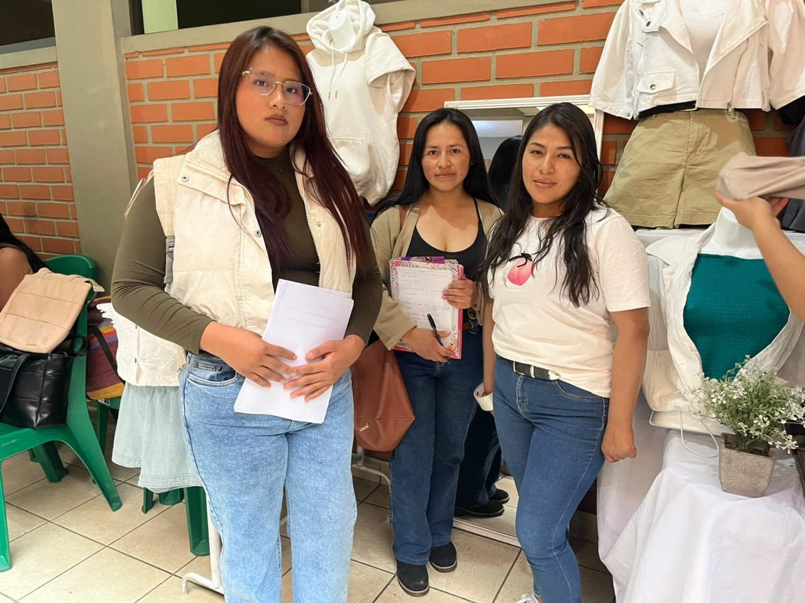
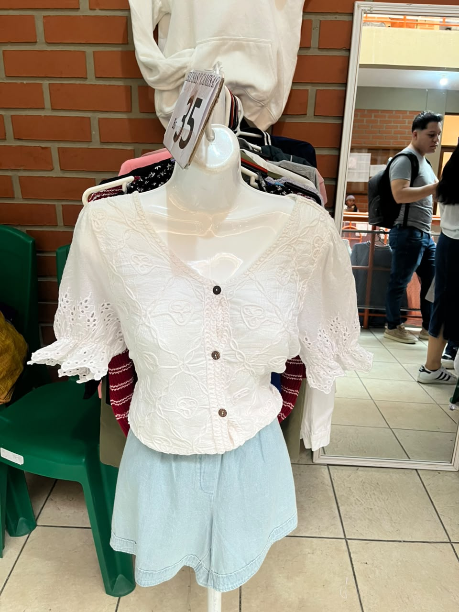
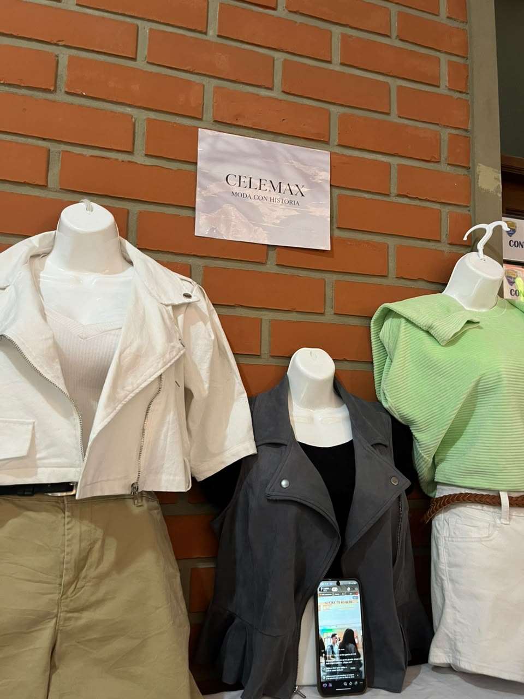

FEXPO ITSEC 2026 - ¡Bienvenidos!
FEXPO ITSEC SUCRE

En la FEXPO ITSEC Sucre se presentan diferentes emprendimientos que permiten conocer ideas de negocio innovadoras. Entre ellos se encuentra CELEMAX, una iniciativa dedicada a la venta de prendas de vestir, que busca ofrecer moda y estilo a sus clientes.



CELEMAX es un emprendimiento de moda dedicado a la comercialización de ropa para mujeres y prendas de estilo versátil. Su propuesta busca ofrecer alternativas de vestimenta que permitan a sus clientes expresar su personalidad y estilo.
Según la información recopilada, el emprendimiento cuenta con aproximadamente cuatro años de funcionamiento y comenzó con un capital inicial de 8.000 bolivianos, demostrando iniciativa y dedicación para desarrollar su actividad comercial.
Entre sus productos se encuentran conjuntos de ropa y chaquetas de jean. Los precios registrados oscilan entre 35 y 70 bolivianos, dependiendo de la prenda y sus características.
Actualmente, CELEMAX no cuenta con una tienda física, por lo que utiliza las redes sociales como una alternativa para promocionar sus productos, mostrar sus prendas y mantener contacto con sus clientes.
El emprendimiento utiliza plataformas como Facebook y TikTok para dar a conocer sus productos y llegar a más personas. A través de estos medios digitales puede compartir novedades, promocionar sus prendas y recibir consultas de posibles compradores.
La participación de CELEMAX en la FEXPO ITSEC permite promocionar su marca, presentar su propuesta de moda y mostrar cómo las redes sociales pueden ayudar al crecimiento de un emprendimiento sin necesidad de contar con un local físico.